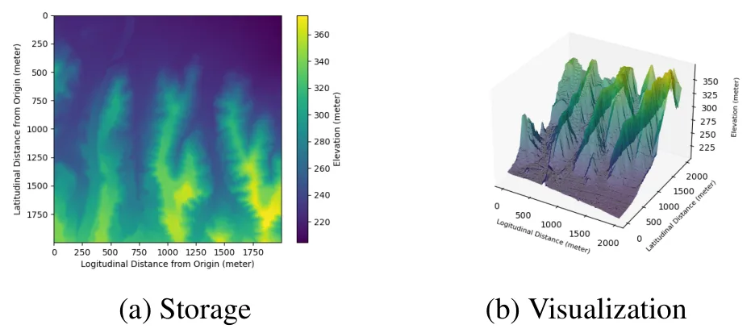
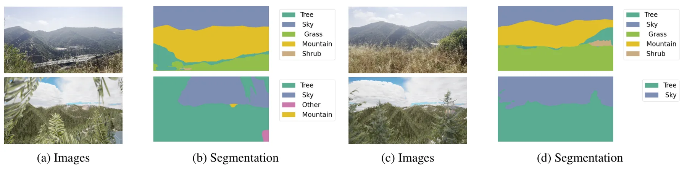
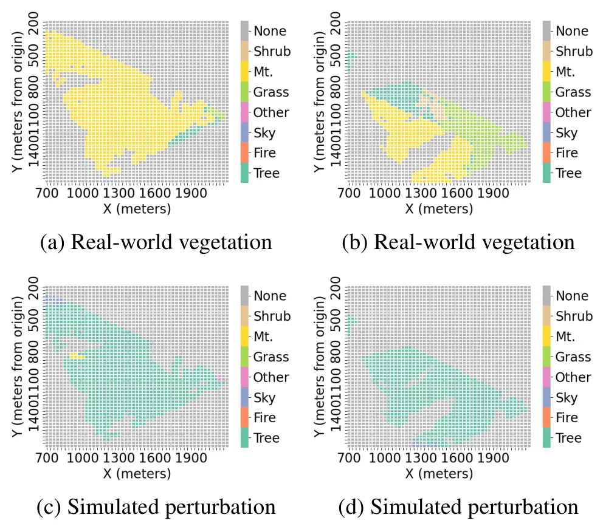
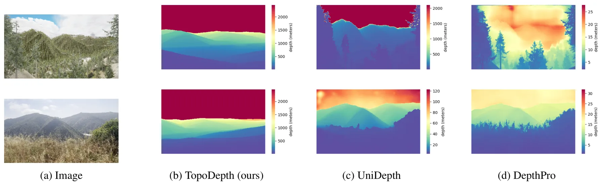
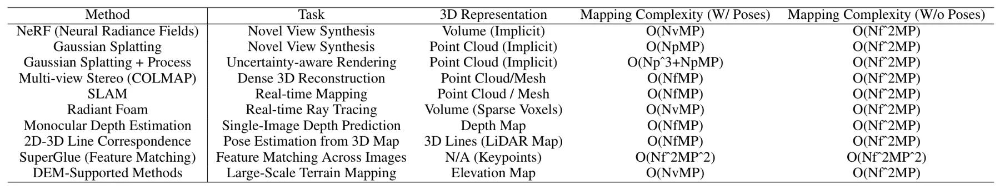
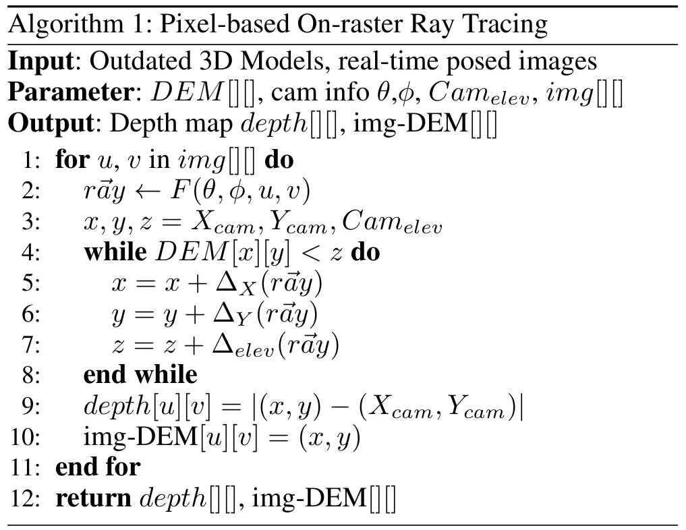
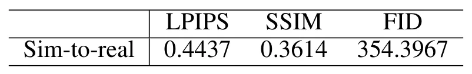

LTM：面向易发山火景观的大规模地形模型LTM: Large-scale Terrain Model for Wildfire-prone Landscapes
对大范围地图更新、低纹理地形和 UAV/遥感重建有应用价值；与 GNSS/INS 航测位姿可形成结合点。算法依赖 posed images 和旧 DEM，一旦先验过时或位姿不准需验证鲁棒性。
一句话工作总结
用旧 DEM 作为几何先验，通过物理像素级对齐提升大范围山火地形图像重建效率和精度。
摘要
LTM 面向 wildfire-prone 大范围区域的三维地形地图更新。传统 LiDAR 精度高但昂贵且更新慢，图像方法成本低但受稀疏纹理和有限重叠影响。作者提出利用旧 DEM 作为几何先验的 multi-modal reconstruction framework，通过 physics-based pixel-pixel alignment 在图像和 DEM 数据之间建立对应，减少昂贵特征匹配。给定 posed images 和 legacy DEMs，方法输出高保真 depth maps，并通过基于真实区域的大地形 simulator 做系统评估。
Accurate 3D terrain maps are essential for emergency response when assessing wildfire hazards. However, wildfire-prone regions often span vast areas where conventional reconstruction methods underperform. Airborne LiDAR systems provide high-resolution terrain data, but they are expensive and infrequently updated. Image-based methods offer a lower-cost alternative, but struggle due to sparse visual features and limited image overlap. We propose a multi-modal reconstruction framework leveraging outdated Digital Elevation Models (DEMs) as geometric priors for image-based 3D reconstruction. Our key innovation is physics-based pixel-pixel alignment between images and DEM data, dramatically reducing computational complexity by eliminating expensive feature matching procedures. To validate our approach, we developed a large-terrain simulator based on a real wildfire-prone area, generating realistic images enabling a comprehensive evaluation. Given posed images and legacy DEMs, our method produces high-fidelity depth maps while maintaining real-time performance. We find significant improvements in reconstruction accuracy and computational efficiency over existing techniques, offering a scalable solution for wildfire response.
中文解读摘录
- 链接：https://arxiv.org/abs/2607.08711 ｜ PDF：https://arxiv.org/pdf/2607.08711
- 中文题名：LTM：面向易发山火景观的大规模地形模型
- 关键信息：针对 wildfire-prone 大范围地区中 LiDAR 贵且更新慢、图像重建又受稀疏纹理和重叠不足限制的问题，提出利用过时 DEM 作为几何先验的 multi-modal reconstruction framework。核心是 physics-based pixel-pixel alignment between images and DEM data，以减少特征匹配开销；给定 posed images 和 legacy DEMs 输出高保真 depth maps，并构建基于真实区域的大地形 simulator 做评估。
- 为什么值得看：该文偏遥感/应急地形重建，但“用旧 DEM 几何先验约束图像深度”的思路对大范围视觉重建、低纹理地形、无人机巡检和地图更新有参考价值。
- 需要核查：posed images 的来源与位姿误差敏感性；旧 DEM 与真实地形变化不一致时的鲁棒性；simulator 与真实航拍/卫星图像域差；是否能与 SfM、MVS 或 GNSS/INS 航测位姿联合优化。
图表/页面预览

{kind=link}

{kind=link}

{kind=link}

{kind=link}

{kind=link}

{kind=link}

{kind=link}
